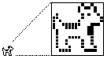

|
|
Apple first introduced the 'SICN' resource so that the Script Manager could represent which country-specific resources
are installed in the system by displaying a small icon in the upper right corner
of the menu bar. You can pass a 'SICN' resource to the Notification Manager or Menu Manager, and they will draw it for
you automatically--you should continue to let them do so.
This Technote addresses the 'SICN' resource format and how to handle 'SICN' Resources with more than one indexed icon. Use PlotSICNHandle for 'SICN' Resources with single-indexed icons. With minor modifications, the techniques in
this Technote can also be used to plot a bitmap of any dimension.
If your application has the need to store more than one icon in a 'SICN' Resource, you will have to load and plot the icons yourself.
We recommend the use of the Icon Utilities package for all your icon needs. This is
located in the Icon Utilities chapter ofInside Macintosh: More Macintosh Toolbox.
[Feb 1 1996]
|
About 'SICN's
What does a 'SICN' look like? The following is a 'SICN' representation of a dogcow to help answer this question:

Figure 1. A 'SICN' Fatbits representation of a dogcow
A 'SICN' resource contains any number of small icon bit images. Each small icon in a 'SICN' list describes a 16 by 16 pixel image and requires 32 bytes of storage. Like an
'ICN#' resource, there is no count of the number of icons stored in a 'SICN'. The following 'SICN' resource, in MPW Rez format, contains two small icons:
resource 'SICN' (1984, "clarus") {
{ /* array: 2 elements */
$"00 48 00 B4 00 84 40 52 C0 41 A0 81 9F 8E 8F 18"
$"40 18 40 18 47 88 48 48 48 48 44 44 3C 3C 00 00",
$"00 48 00 FC 00 FC 40 7E C0 7F E0 FF FF FE FF F8"
$"7F F8 7F F8 7F F8 78 78 78 78 7C 7C 3C 3C 00 00"
}
};
|
Back to top
Using 'SICN's
The following examples describe techniques useful when using 'SICN's.
Defining a 'SICN' as an Array
The Macintosh Toolbox interfaces do not describe all the necessary data structures
needed to work with 'SICN' resources. As shown in the following example, defining the 'SICN' type as an array of 16 short integers and the handles and pointers to this array
type make life much easier.
TYPE
SICN = ARRAY[0 .. 15] of INTEGER;
SICNList = ARRAY[0 .. 0] of SICN;
SICNPtr = ^SICNList;
SICNHand = ^SICNPtr;
|
|
Listing 1. Pascal.
|
typedef short SICN[16];
typedef SICN *SICNList;
typedef SICNList *SICNHand;
|
|
Listing 2. C.
|
Counting Included Small Icons
The 'SICN' resource does not provide a count to indicate the number of small icons contained
within; however, you can easily determine this number by dividing the total size
of the resource by the size of a single small icon.
CONST
mySICN = 1984;
VAR
theSICN : SICNHand;
theSize : LONGINT;
theCount : LONGINT;
theIndex : LONGINT;
theSICN := SICNHand(GetResource('SICN', mySICN));
IF (theSICN <> NIL) THEN BEGIN
theSize := GetHandleSize(Handle(theSICN));
theCount := theSize DIV sizeof(SICN);
END;
|
|
Listing 3. Pascal.
|
#define mySICN 1984
SICNHand theSICN;
long theSize;
long theCount;
long theIndex;
theSICN = (SICNHand) GetResource('SICN', mySICN);
if (theSICN) {
theSize = GetHandleSize((Handle)theSICN);
theCount = theSize / sizeof(SICN);
}
|
|
Listing 4. C.
|
Calling Plot SICN
The example procedure PlotSICN draws one small icon of a 'SICN' resource. It takes the handle from theSICN and the position in the list from theIndex within the rectangle theRect of the current GrafPort.
The following is an example call to PlotSICN which plots all the small icons in a resource into the same rectangle:
SetRect(theRect, 0, 0, 16, 16);
FOR theIndex := 0 TO theCount-1 DO
PlotSICN(theRect, theSICN, theIndex);
|
|
Listing 5. Pascal.
|
SetRect(&theRect, 0, 0, 16, 16);
for (theIndex = 0; theIndex < theCount ; ++theIndex)
PlotSICN(&theRect, theSICN, theIndex);
|
|
Listing 6. C.
|
Locking the Handle to 'SICN'
Because PlotSICN uses CopyBits and CopyBits can move memory, you should lock the handle to the 'SICN' once the resource is loaded. Notice that the PlotSICN procedure dereferences the 'SICN' handle, adds an offset, and copies the resulting value. If the 'SICN' list moves in memory at this time, the bitmap's baseAddr is useless.
To play it safe, PlotSICN saves a copy of the master pointer flags associated with the relocatable block, locks
the block with a call to HLock, and restores the flags after calling CopyBits.
|
WARNING:
You should never
examine, set, or clear these flags directly; you should always use the routines which
are provided by the Memory Manager and Resource Manager. It is not necessary to check
the value of the flag after getting it.
|
PROCEDURE PlotSICN(theRect: Rect; theSICN: SICNHand; theIndex : INTEGER);
VAR
state : SignedByte; {we want a chance to restore original
state }
srcBits : BitMap; {built up around 'SICN' data so we can
CopyBits }
BEGIN
{check the index for a valid value }
IF (GetHandleSize(Handle(theSICN)) DIV sizeof(SICN)) > theIndex THEN
BEGIN
{store the resource's current locked/unlocked condition }
state := HGetState(Handle(theSICN));
{lock the resource so it won't move during the CopyBits call }
HLock(Handle(theSICN));
{set up the small icon's bitmap }
{$PUSH}
{$R-} {turn off range checking }
srcBits.baseAddr := Ptr(@theSICN^^[theIndex]);
{$POP}
srcBits.rowBytes := 2;
SetRect(srcBits.bounds, 0, 0, 16, 16);
{draw the small icon in the current grafport }
CopyBits(srcBits,thePort^.portBits,srcBits.bounds,
theRect,srcCopy,NIL);
{restore the resource's locked/unlocked condition }
HSetState(Handle(theSICN), state);
END;
END;
|
|
Listing 7. Pascal.
|
void PlotSICN(Rect *theRect, SICNHand theSICN, long theIndex) {
char state; /* saves original flags of 'SICN' handle */
BitMap srcBits; /* built up around 'SICN' data so we can CopyBits */
/* check the index for a valid value */
if ((GetHandleSize(Handle(theSICN)) / sizeof(SICN)) > theIndex) {
/* store the resource's current locked/unlocked condition */
state = HGetState((Handle)theSICN);
/* lock the resource so it won't move during the CopyBits call */
HLock((Handle)theSICN);
/* set up the small icon's bitmap */
srcBits.baseAddr = (Ptr) (*theSICN)[theIndex];
srcBits.rowBytes = 2;
SetRect(&srcBits.bounds, 0, 0, 16, 16);
/* draw the small icon in the current grafport */
CopyBits(&srcBits,&(*qd.thePort).portBits,
&srcBits.bounds,theRect,srcCopy,nil);
/* restore the resource's locked/unlocked condition */
HSetState((Handle) theSICN, state);
}
}
|
|
Listing 8. C.
|
Back to top
References
Inside Macintosh: Macintosh ToolBox Essentials
Inside Macintosh: Imaging With QuickDraw
Inside Macintosh: Memory
Technical Note QD 17 -- Drawing Icons
Back to top
Change History
|
01-August-1989
|
Originally written.
|
|
01-February-1996
|
Errors in the Pascal code were corrected.
|
Back to top
Downloadables
|

|
Acrobat version of this Note (64K).
|
Download
|
Back to top
|